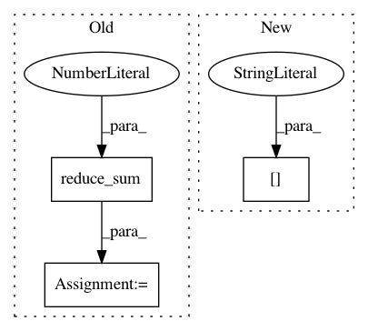

2966f198b8d1792a69a7251d555c8e514941880c,sac/distributions/real_nvp.py,,standard_normal_log_likelihood,#Any#,7
Before Change
EPS = 1e-9
def standard_normal_log_likelihood(x):
log_likelihoods = (
- 0.5 * tf.reduce_sum(tf.square(x), axis=1)
- tf.log(2.0 * np.pi))
return log_likelihoods
def checkerboard(shape, parity="even", dtype=tf.bool):
TODO: Check this implementation
After Change
def standard_normal_log_likelihood(x):
dist = tf.contrib.distributions.MultivariateNormalDiag(
loc=tf.zeros(x.shape[1:]), scale_diag=tf.ones(x.shape[1:]))
log_probs = dist.log_prob(x)
return log_probs
In pattern: SUPERPATTERN
Frequency: 3
Non-data size: 3
Instances
Project Name: rail-berkeley/softlearning
Commit Name: 2966f198b8d1792a69a7251d555c8e514941880c
Time: 2018-05-22
Author: kristian.hartikainen@gmail.com
File Name: sac/distributions/real_nvp.py
Class Name:
Method Name: standard_normal_log_likelihood
Project Name: THUNLP-MT/THUMT
Commit Name: 91db14020567987d8cda29a6140825c888e84917
Time: 2017-11-24
Author: playinf@stu.xmu.edu.cn
File Name: thumt/data/record.py
Class Name:
Method Name: get_input_features
Project Name: IndicoDataSolutions/finetune
Commit Name: 638ed35788284f646a955ff0af11952017ed6e3e
Time: 2020-01-10
Author: lily.zhang@indico.io
File Name: finetune/target_models/comparison.py
Class Name: Comparison
Method Name: _target_model